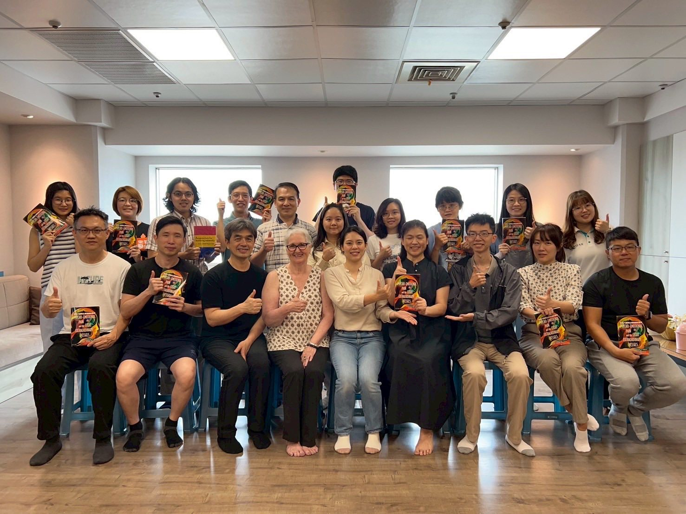
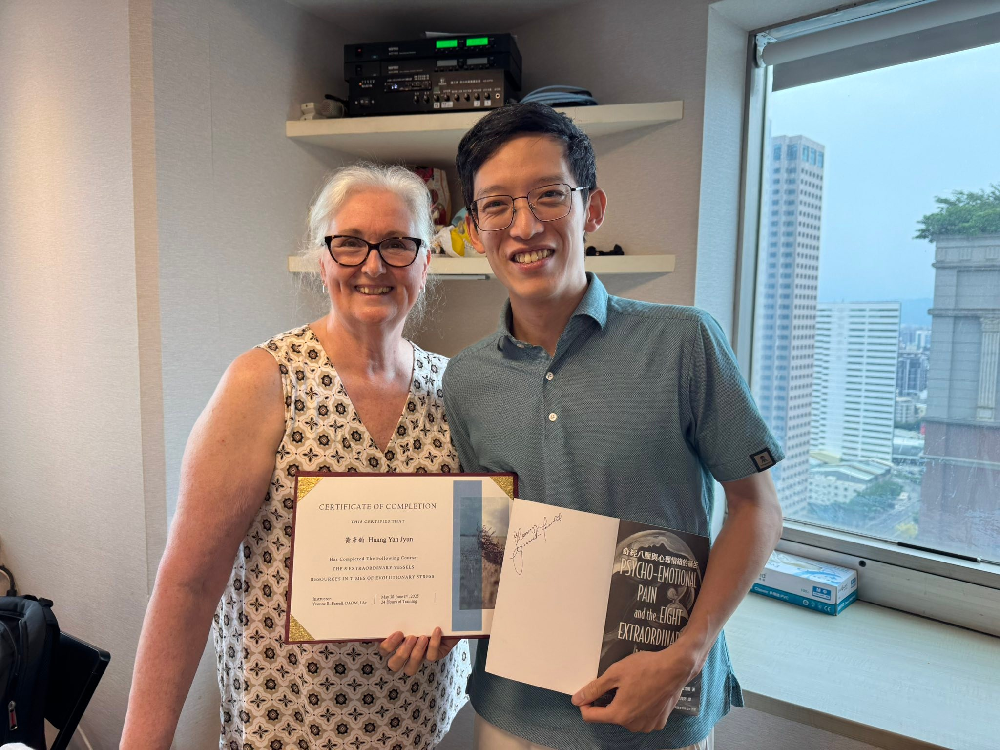
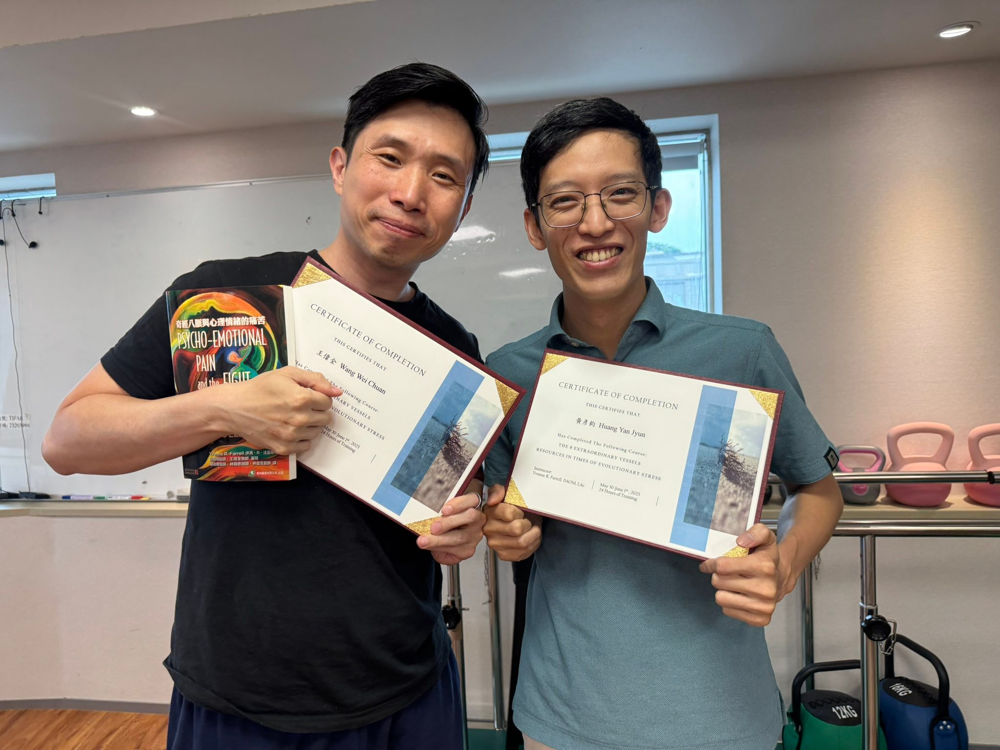
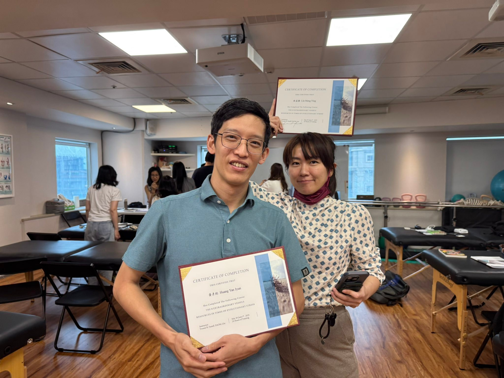
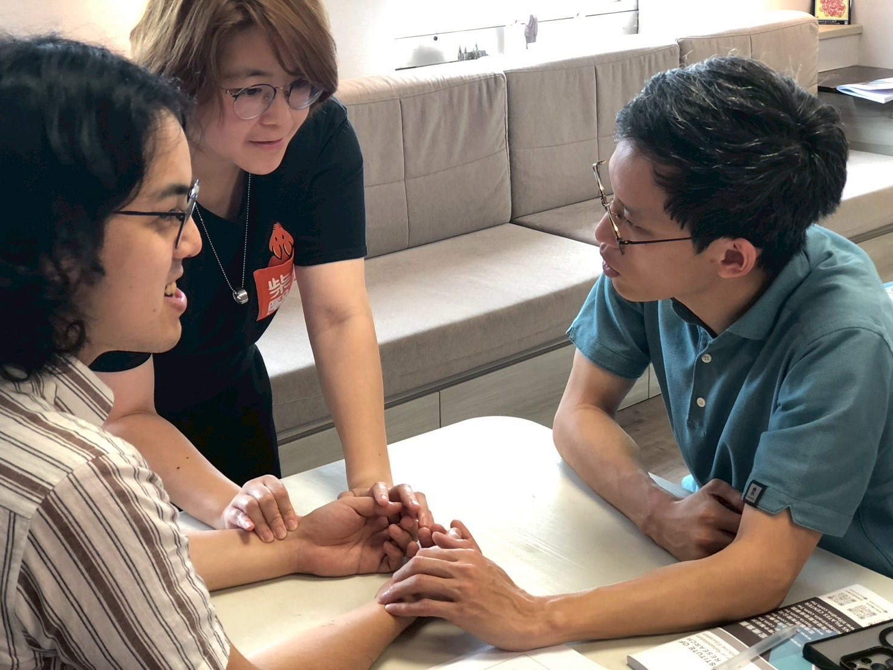
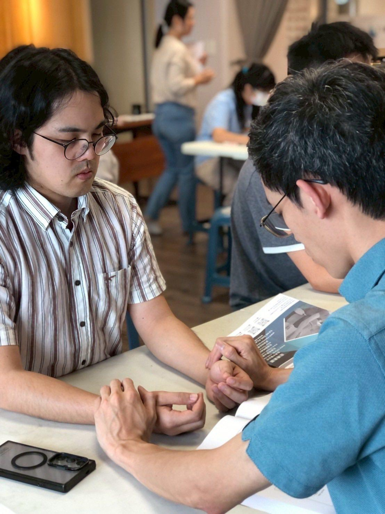
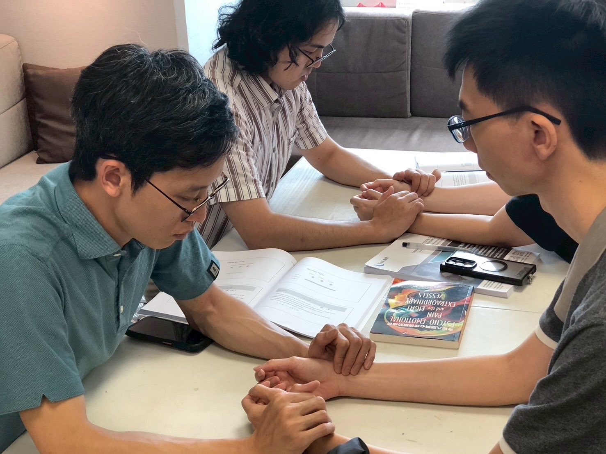
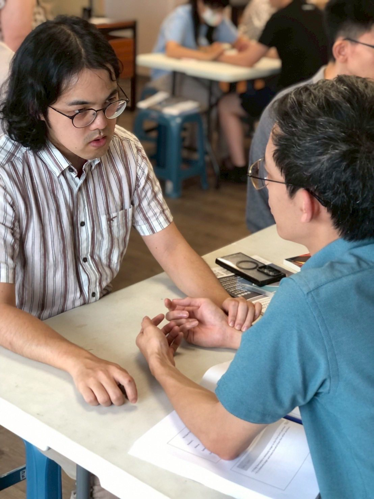
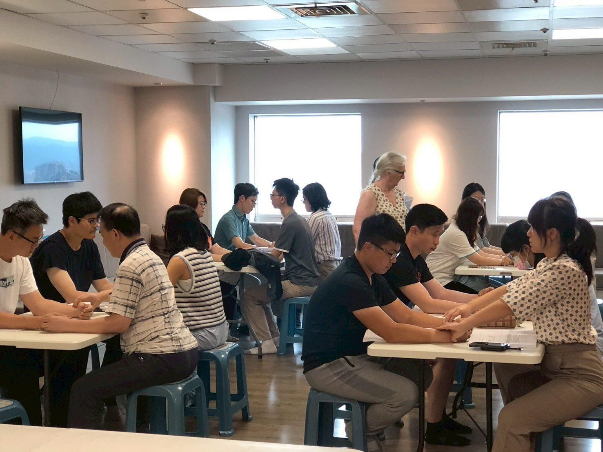
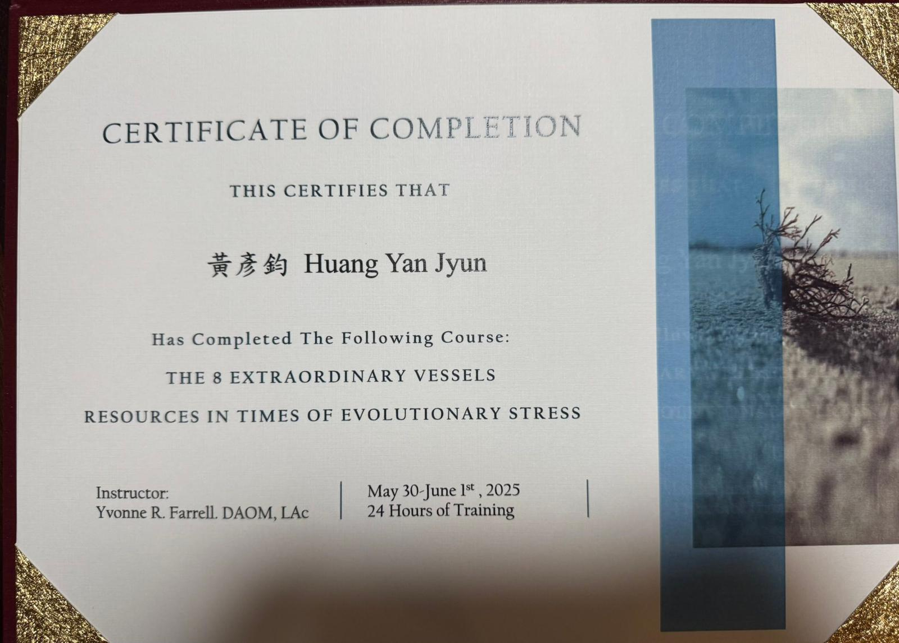

奇經八脈與心理情緒的痛苦 2025.5.30-2025.6.1
奇經八脈與心理情緒的痛苦 2025.5.30-2025.6.1
「在不久的將來，中醫會從國外紅回來」 這是以前學生時期老師上課提到師公講過的話，也是我這次上完課第一個瞬間閃過腦中的念頭。
Yvonne，這次的授課老師，已經在LA執業、教學30-40年，很難想像一位外國人對於中華文化、道醫文化學習、著墨、身體力行至如此深刻，真的非常令人佩服！
這次課程，Yvonne老師在醫師班（針灸班）給出了奇經八脈在道醫中本身的意涵與其跟情緒、個性、個人反應，甚至到個人人生課題命題的幾乎所有的資訊（講義有夠厚，300多張PPT），內容豐富，涵蓋以道醫、中醫為主的內容，也包含了老師自己臨床的經驗。
能用「奇經八脈」來與現代心理學、情緒解剖、心理層次上的體質差異、最後到人生命題相互串接，甚至還學習了奇經八脈的獨特脈象，沒有虛浮誇張的怪力亂神、也沒有天花亂墜的自吹自擂，Yvonne老師就是很真誠、很堅定地告訴你這「奇經八脈」系統在幹嘛、怎麼用。
這次工作坊大大了補足我中醫學習過程裡對於「奇經八脈」這一塊的不足，我認為對中醫師來說，會是很棒的學習經驗！非常推薦！
把脈練習的最後環節，Yvonne老師歡迎讓大家來摸她的脈，我當然也上去體驗一下，我自認我是個很務實理性的人，但！我在把Yvonne老師的脈的時候，不知道是不是老師功力太深厚，我整個從手一路到胸口熱熱暖暖的感覺，頭也有點脹，但不是不舒服的那種，就是一股很清晰的感受，但我不知道為什麼會這樣🤷♂️
最後QA的時候，Yvonne老師說：
「這套奇經八脈系統是我人生的志業，我的任務是把它交給台下的你們，讓你們在幫助患者到卡關的時候，能有多一種角度、視野與可能性去面對眼前的狀況。」
接著繼續說：
「如果你用了覺得很棒、很有幫助，願意繼續在職業生涯中運用，那我會很高興；但如果你覺得這套用的不喜歡、不順手、不好用，決定不用，那我也還是很高興！」
就是這麼地堅定、肯定，毫不猶豫地傳達著她的人生志業！
每次來宏甫上課，都不乏一堆神人們當同學，這次遇到書本的兩位審閱者：
一位是仰慕追蹤已久的超全能診所－智能機器人復健、再生注射/增生療法 王偉全醫師、徒手運動治療、整合門診復健科王偉全醫師！
一位是西轉中的邵柏翔醫師！
此外還有特地從香港飛過來的 @柴胡醫館 柴胡中醫，
跟很會把人變美麗的林孟穎醫師學姐，跟我這次的partner 中醫文藝復興之路｜台北 Dr.沈沈哥，還有很多學長姐同學都在同一個空間，實在又再次感受到自己的渺小！
每次來宏甫上課，都能享受到這種很純粹、單純的學習的快樂與充實感，整班都是醫師，但完全沒有任何的知識分子的高傲與互斥，討論的時候也是順暢交流，沒有任何上對下、老對少的壓迫，就是這份融洽、快樂與充實，真的非常喜歡☺️☺️☺️
很感謝宏甫蕭老師與師母Sophia Su引進這次 #奇經八脈與心理情緒 的三天課程，即便上完後到現在，還是有很多腦中資訊、身心感受需要再沉澱消化一下，但很明顯的有感受到自己看待事情的角度有點跟以往的自己不同。
身心靈的問題在現代社會甚至到未來只會越來越常見，越來越被需要，透過這套站在中醫角度之「奇經八脈」系統來與心理情緒做連結應用，或許會是面對疾病與痛苦的另一個很好的施力槓桿！而中醫，本質上就是關注身體、心靈與人際社會三方面的醫療文化，越來越多醫療專業也都注意並強調這件事，我們關照「全人」而非只是疾病，心理情緒絕對是不可忽略的一部分！
#奇經八脈與心理情緒的痛苦
宏甫研究室
太初中醫診所 東門中醫
中醫師 黃彥鈞









